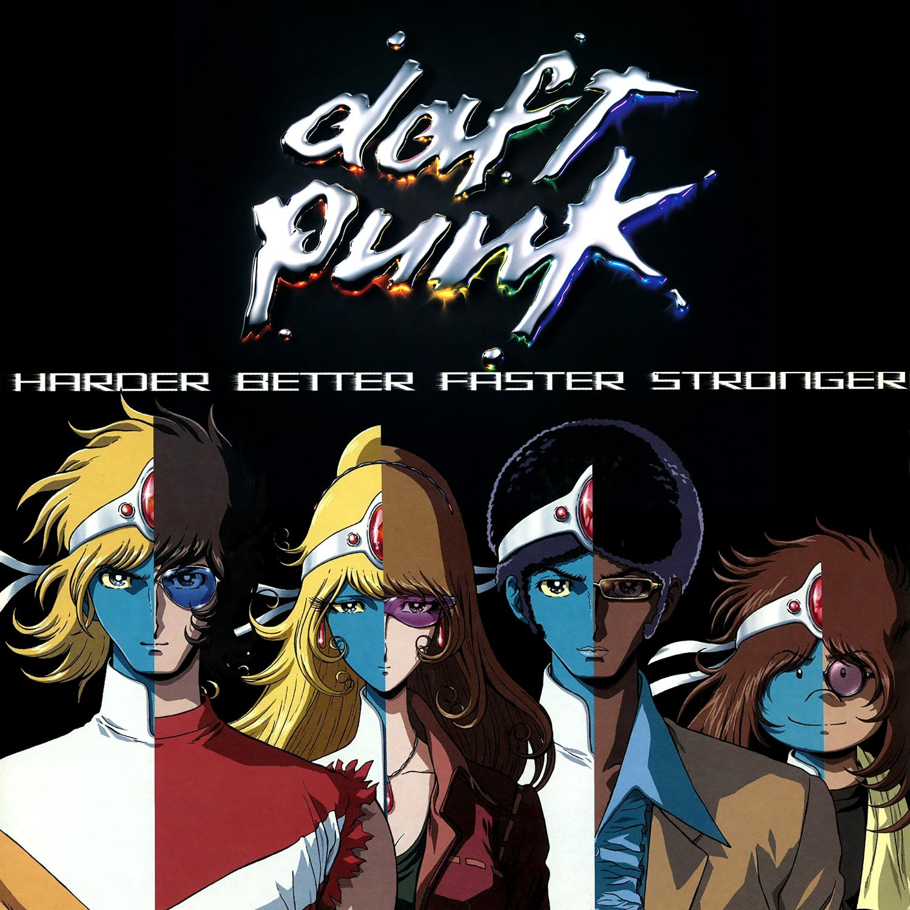
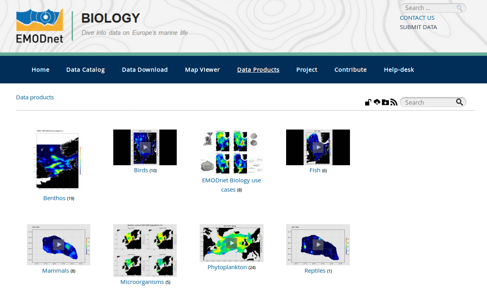
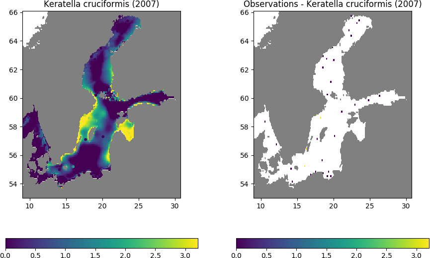
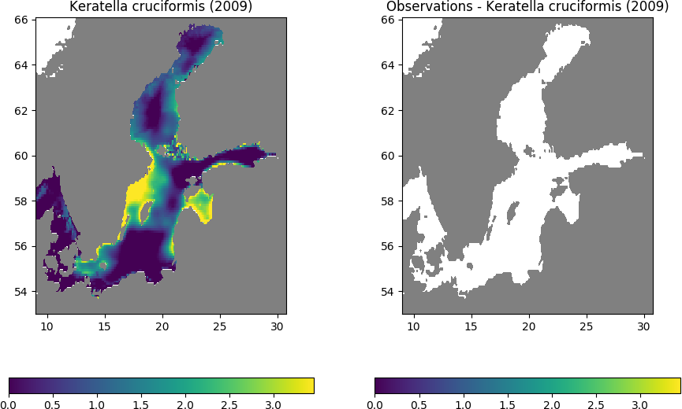
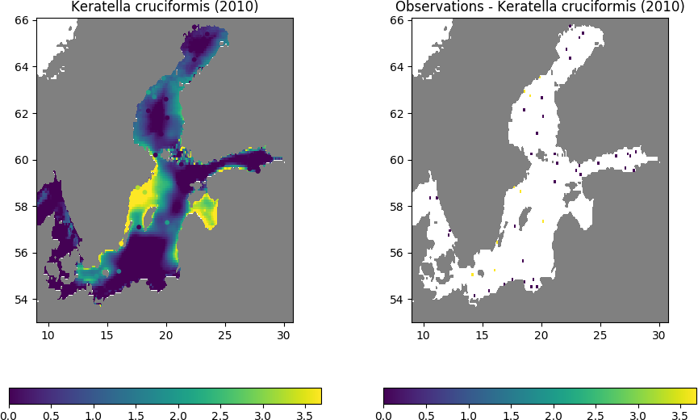

Generating ocean climatologies from in situ observations
gher-ulg
@GHER_ULiege
0000-0002-0265-1021


Alexander Barth, Charles Troupin, Sylvain Watelet,
Aida Alvera-Azcárate and Jean-Marie Beckers
Collect once,
Use many times
And create products with DIVA
Conclusions
- `DIVA` is a software tool written in Fortran
- `DIVAnd` is a software tool written in Julia
- Both are designed for the spatial interpolation of data
Methodology:
spatial interpolation
Gridding problem
DIVA
Data-Interpolating Variational Analysishttps://github.com/gher-ulg/DIVA
DIVAnd
https://github.com/gher-ulg/DIVAnd.jl
DIVAnd
https://www.geosci-model-dev.net/7/225/2014/How to use it?
Jupyter notebooks as a guideline for the climatologies
https://github.com/gher-ulg/Diva-Workshops
Fortran - MATLAB - Julia...
Creation: 2012
1.0.0 released: Aug 9, 2018
Simplicity of Python + speed of C or Fortran
http://julialang.org/
https://github.com/JuliaLang/julia
Who is Julia?
Julia Child (1912-2004)
By Lynn Gilbert - Own work, CC BY-SA 4.0, https://commons.wikimedia.org/w/index.php?curid=51678880
Why did we chose Julia?
Source: http://daftpunk.wikia.com, No copyright infringement is intended
Better...
Multiple dispatch
Math-friendly syntax
Unicode support: π, η, ∫ϵα
julia> üêü = 1.
julia> üê¢ = 2.
julia> N = üêü + üê¢
3.0
Faster
Just-in-time (JIT) compiled
Parallelism
function fib(n::Int)
f=Vector{Int}(undef, n+1)
f[1]=f[2]=1;
for i=3:n+1
f[i]=f[i-1]+f[i-2]
end
return f
end
ff = @time fib(400000000);
1.158971 seconds (18.52 k allocations: 2.981 GiB, 0.84% gc time)
Stronger
Metaprogramming:
Julia programs can read, analyse, generate other Julia programs
"Easy" interfacing: R, Python, ...
@pyimport numpy.random as nr
nr.rand(3,4)
Harder
Learning a new and evolving language
Transition from 0.6 to 1.0

DIVAnd
in the VRE
In short...
1. Ingest data from webODV (netCDF)
2. Set the analysis parameters
3. Apply DIVAnd interpolation
4. Export the results in a new netCDF
5. Visualise using Deltares toolbox
Implementation
1. Julia using HTTP and JSON modules
2. Deployment as a Docker container
Applications
SeaDataCloud climatologies
https://www.seadatanet.org/Products/Climatologies
EMODnet Chemistry gridded fields
http://www.emodnet-chemistry.eu/products
EMODnet Biology products
http://www.emodnet-biology.eu/data-products
#Innovations
 Test areas: Ibiza Channel, Gulf of Trieste
Neural network
Neural network
From univariate to multivariate...
Principle:
Use other co-variables to improve the interpolation
Use neural network to derive the relationships between the variables
Application: zooplankton count in the Baltic Sea





Conclusions
- `DIVA` is a software tool written in Fortran
- `DIVAnd` is a software tool written in Julia
- Both are designed for the spatial interpolation of data
- We are open and willing to improve and adapt the code for different data types